DDS Project 1
CDHolmes & MPatel
1/1/2022
Libraries
library(ggplot2)
library(tidyverse)## ── Attaching packages ───────────────── tidyverse 1.3.1 ──## ✓ tibble 3.1.6 ✓ dplyr 1.0.7
## ✓ tidyr 1.1.4 ✓ stringr 1.4.0
## ✓ readr 2.1.0 ✓ forcats 0.5.1
## ✓ purrr 0.3.4## ── Conflicts ──────────────────── tidyverse_conflicts() ──
## x dplyr::filter() masks stats::filter()
## x dplyr::lag() masks stats::lag()library(magrittr)##
## Attaching package: 'magrittr'## The following object is masked from 'package:purrr':
##
## set_names## The following object is masked from 'package:tidyr':
##
## extractlibrary(maps)##
## Attaching package: 'maps'## The following object is masked from 'package:purrr':
##
## maplibrary(dplyr)
library(rvest)##
## Attaching package: 'rvest'## The following object is masked from 'package:readr':
##
## guess_encodinglibrary(xml2)
library(scico)
library(caret)## Loading required package: lattice##
## Attaching package: 'caret'## The following object is masked from 'package:purrr':
##
## liftlibrary(e1071)
library(class)
library(robotstxt)Variables
beers <- read.csv("/Users/milan/Downloads/MSDS_6306_Doing-Data-Science-Master/Unit 8 and 9 Case Study 1/Beers.csv", header = TRUE, encoding = "UTF-8")
breweries <- read.csv("/Users/milan/Downloads/MSDS_6306_Doing-Data-Science-Master/Unit 8 and 9 Case Study 1/Breweries.csv", header = TRUE, encoding = "UTF-8")
mapdata <- map_data("state")
## Add state abbreviation to mapdata
mapdata$State <- # nolint
state.abb[match(mapdata$region, str_to_lower(state.name))]
mapdata[400, ] # checking random line for match## long lat group order region subregion
## 402 -93.30045 36.49741 3 402 arkansas <NA>
## State
## 402 ARExplore Datasets
head(beers)## Name Beer_ID ABV IBU Brewery_id
## 1 Pub Beer 1436 0.050 NA 409
## 2 Devil's Cup 2265 0.066 NA 178
## 3 Rise of the Phoenix 2264 0.071 NA 178
## 4 Sinister 2263 0.090 NA 178
## 5 Sex and Candy 2262 0.075 NA 178
## 6 Black Exodus 2261 0.077 NA 178
## Style Ounces
## 1 American Pale Lager 12
## 2 American Pale Ale (APA) 12
## 3 American IPA 12
## 4 American Double / Imperial IPA 12
## 5 American IPA 12
## 6 Oatmeal Stout 12head(breweries)## Brew_ID Name City State
## 1 1 NorthGate Brewing Minneapolis MN
## 2 2 Against the Grain Brewery Louisville KY
## 3 3 Jack's Abby Craft Lagers Framingham MA
## 4 4 Mike Hess Brewing Company San Diego CA
## 5 5 Fort Point Beer Company San Francisco CA
## 6 6 COAST Brewing Company Charleston SChead(mapdata)## long lat group order region subregion State
## 1 -87.46201 30.38968 1 1 alabama <NA> AL
## 2 -87.48493 30.37249 1 2 alabama <NA> AL
## 3 -87.52503 30.37249 1 3 alabama <NA> AL
## 4 -87.53076 30.33239 1 4 alabama <NA> AL
## 5 -87.57087 30.32665 1 5 alabama <NA> AL
## 6 -87.58806 30.32665 1 6 alabama <NA> ALdim(beers)## [1] 2410 7dim(breweries)## [1] 558 4Beer Advocate Styles
# These styles are used as an independent resource to categorise beers into
# more strict style groups.
# Beer Advocate Styles
beer_advocate_styles <- "https://www.beeradvocate.com/beer/styles/"
## Check scraping permissions
paths_allowed(paths = c(beer_advocate_styles))##
www.beeradvocate.com## [1] TRUE# Return Data
beer_advocate <- read_html(beer_advocate_styles)
# Get Style Family Length for for loop
style_family_length <-
beer_advocate %>%
html_nodes("#ba-content b") %>%
html_text2()
style_family_length## [1] "Bocks" "Brown Ales" "Dark Ales"
## [4] "Dark Lagers" "Hybrid Beers" "India Pale Ales"
## [7] "Pale Ales" "Pale Lagers" "Porters"
## [10] "Specialty Beers" "Stouts" "Strong Ales"
## [13] "Wheat Beers" "Wild/Sour Beers"style_length <- length(style_family_length)
# Blank dataframe for for loop
style_df_ba <- data.frame(style = c(), style_family = c())
# Retrieve Style Family and Style then create data frame from list
for (i in 1:style_length) {
# Pull each Style Family y
style_family_node <- paste0(".stylebreak:nth-child(", i, ") b")
style_family <-
beer_advocate %>%
html_nodes(style_family_node) %>%
html_text2
style_family
# Pull each Style and convert to dataframe
style_node <- paste0("#ba-content .stylebreak:nth-child(", i, ") li")
style <-
beer_advocate %>%
html_nodes(style_node) %>%
html_text2()
style_df <- as.data.frame(style)
# Assign Style family to each line of data frame
style_df$style_family <- style_family
# Append data frame onto final style dataframe
style_df_ba <- rbind(style_df_ba, style_df)
}
# Reorder dataframe
style_df_ba <- style_df_ba[, c(2, 1)]
style_df_ba## style_family
## 1 Bocks
## 2 Bocks
## 3 Bocks
## 4 Bocks
## 5 Bocks
## 6 Brown Ales
## 7 Brown Ales
## 8 Brown Ales
## 9 Brown Ales
## 10 Brown Ales
## 11 Dark Ales
## 12 Dark Ales
## 13 Dark Ales
## 14 Dark Ales
## 15 Dark Lagers
## 16 Dark Lagers
## 17 Dark Lagers
## 18 Dark Lagers
## 19 Dark Lagers
## 20 Dark Lagers
## 21 Dark Lagers
## 22 Hybrid Beers
## 23 Hybrid Beers
## 24 Hybrid Beers
## 25 Hybrid Beers
## 26 India Pale Ales
## 27 India Pale Ales
## 28 India Pale Ales
## 29 India Pale Ales
## 30 India Pale Ales
## 31 India Pale Ales
## 32 India Pale Ales
## 33 Pale Ales
## 34 Pale Ales
## 35 Pale Ales
## 36 Pale Ales
## 37 Pale Ales
## 38 Pale Ales
## 39 Pale Ales
## 40 Pale Ales
## 41 Pale Ales
## 42 Pale Ales
## 43 Pale Ales
## 44 Pale Ales
## 45 Pale Ales
## 46 Pale Lagers
## 47 Pale Lagers
## 48 Pale Lagers
## 49 Pale Lagers
## 50 Pale Lagers
## 51 Pale Lagers
## 52 Pale Lagers
## 53 Pale Lagers
## 54 Pale Lagers
## 55 Pale Lagers
## 56 Pale Lagers
## 57 Pale Lagers
## 58 Pale Lagers
## 59 Pale Lagers
## 60 Porters
## 61 Porters
## 62 Porters
## 63 Porters
## 64 Porters
## 65 Porters
## 66 Specialty Beers
## 67 Specialty Beers
## 68 Specialty Beers
## 69 Specialty Beers
## 70 Specialty Beers
## 71 Specialty Beers
## 72 Specialty Beers
## 73 Specialty Beers
## 74 Specialty Beers
## 75 Specialty Beers
## 76 Specialty Beers
## 77 Specialty Beers
## 78 Stouts
## 79 Stouts
## 80 Stouts
## 81 Stouts
## 82 Stouts
## 83 Stouts
## 84 Stouts
## 85 Stouts
## 86 Strong Ales
## 87 Strong Ales
## 88 Strong Ales
## 89 Strong Ales
## 90 Strong Ales
## 91 Strong Ales
## 92 Strong Ales
## 93 Strong Ales
## 94 Strong Ales
## 95 Strong Ales
## 96 Strong Ales
## 97 Strong Ales
## 98 Wheat Beers
## 99 Wheat Beers
## 100 Wheat Beers
## 101 Wheat Beers
## 102 Wheat Beers
## 103 Wheat Beers
## 104 Wild/Sour Beers
## 105 Wild/Sour Beers
## 106 Wild/Sour Beers
## 107 Wild/Sour Beers
## 108 Wild/Sour Beers
## 109 Wild/Sour Beers
## 110 Wild/Sour Beers
## 111 Wild/Sour Beers
## 112 Wild/Sour Beers
## 113 Wild/Sour Beers
## 114 Wild/Sour Beers
## style
## 1 Bock - Doppelbock *
## 2 Bock - Eisbock
## 3 Bock - Maibock *
## 4 Bock - Traditional
## 5 Bock - Weizenbock *
## 6 Altbier
## 7 Brown Ale - American *
## 8 Brown Ale - Belgian Dark
## 9 Brown Ale - English
## 10 Mild Ale - English Dark
## 11 Dubbel
## 12 Rye Beer - Roggenbier
## 13 Scottish Ale *
## 14 Winter Warmer
## 15 Lager - American Amber / Red *
## 16 Lager - European Dark
## 17 Lager - Märzen
## 18 Lager - Munich Dunkel
## 19 Lager - Rauchbier
## 20 Lager - Schwarzbier
## 21 Lager - Vienna
## 22 Bière de Champagne / Bière Brut
## 23 Braggot
## 24 California Common / Steam Beer
## 25 Cream Ale
## 26 IPA - American
## 27 IPA - Belgian
## 28 IPA - Black / Cascadian Dark Ale
## 29 IPA - Brut
## 30 IPA - English
## 31 IPA - Imperial
## 32 IPA - New England *
## 33 Bitter - English
## 34 Bitter - English Extra Special / Strong Bitter (ESB)
## 35 Blonde Ale - Belgian *
## 36 Blonde Ale - American
## 37 Farmhouse Ale - Bière de Garde *
## 38 Farmhouse Ale - Saison *
## 39 Kölsch
## 40 Mild Ale - English Pale
## 41 Pale Ale - American
## 42 Pale Ale - Belgian
## 43 Pale Ale - English
## 44 Red Ale - American Amber / Red *
## 45 Red Ale - Irish
## 46 Lager - Adjunct
## 47 Lager - American *
## 48 Lager - European / Dortmunder Export *
## 49 Lager - European Pale
## 50 Lager - European Strong
## 51 Lager - Festbier / Wiesnbier
## 52 Lager - Helles *
## 53 Lager - India Pale Lager (IPL)
## 54 Lager - Kellerbier / Zwickelbier
## 55 Lager - Light
## 56 Lager - Malt Liquor
## 57 Pilsner - Bohemian / Czech *
## 58 Pilsner - German *
## 59 Pilsner - Imperial
## 60 Porter - American
## 61 Porter - Baltic
## 62 Porter - English
## 63 Porter - Imperial *
## 64 Porter - Robust *
## 65 Porter - Smoked *
## 66 Chile Beer
## 67 Farmhouse Ale - Sahti
## 68 Fruit and Field Beer *
## 69 Gruit / Ancient Herbed Ale
## 70 Happoshu
## 71 Herb and Spice Beer *
## 72 Kvass
## 73 Lager - Japanese Rice
## 74 Low Alcohol Beer
## 75 Pumpkin Beer *
## 76 Rye Beer *
## 77 Smoked Beer *
## 78 Stout - American *
## 79 Stout - American Imperial *
## 80 Stout - English
## 81 Stout - Foreign / Export
## 82 Stout - Irish Dry *
## 83 Stout - Oatmeal *
## 84 Stout - Russian Imperial
## 85 Stout - Sweet / Milk *
## 86 Barleywine - American
## 87 Barleywine - English
## 88 Old Ale
## 89 Quadrupel (Quad)
## 90 Red Ale - Imperial *
## 91 Scotch Ale / Wee Heavy
## 92 Strong Ale - American
## 93 Strong Ale - Belgian Dark
## 94 Strong Ale - Belgian Pale
## 95 Strong Ale - English
## 96 Tripel
## 97 Wheat Beer - Wheatwine *
## 98 Wheat Beer - American Dark
## 99 Wheat Beer - American Pale
## 100 Wheat Beer - Dunkelweizen
## 101 Wheat Beer - Hefeweizen
## 102 Wheat Beer - Kristallweizen
## 103 Wheat Beer - Witbier
## 104 Brett Beer *
## 105 Lambic - Faro
## 106 Lambic - Fruit *
## 107 Lambic - Gueuze
## 108 Lambic - Traditional
## 109 Sour - Berliner Weisse *
## 110 Sour - Flanders Oud Bruin
## 111 Sour - Flanders Red Ale
## 112 Sour - Fruited Kettle Sour
## 113 Sour - Gose *
## 114 Wild Aleview(style_df_ba)Transform Data
# Merge Breweries and Beers into one data frame
brew_beers <-
left_join(beers, breweries, by = c("Brewery_id" = "Brew_ID")) %>%
select(Name.x, Beer_ID, ABV, IBU, Brewery_id, Style, Ounces, Name.y, City,
State) %>%
filter(ABV > .001 | is.na(ABV)) %>%
rename("beer_name" = "Name.x") %>%
rename("brewery_name" = "Name.y")
# Creating more strict style groups based on Beer Advocate dataframe
brew_beers_new <-
brew_beers %>%
filter(!is.na(Style)) %>%
mutate(style_strict =
ifelse(grepl("Stout", Style, ignore.case = TRUE), "Stout",
ifelse(grepl("Ale|Kölsch|Altbier|Winter Warmer", Style,
ignore.case = TRUE), "Ale",
ifelse(grepl("IPA", Style, ignore.case = TRUE), "IPA",
ifelse(grepl("Lager|Pilsener|Pilsner|Oktoberfest", Style,
ignore.case = TRUE), "Lager",
ifelse(grepl("Porter", Style, ignore.case = TRUE), "Porter",
ifelse(grepl("Witbier|Hefeweizen", Style,
ignore.case = TRUE), "Wheat Beer",
ifelse(grepl("Bock", Style, ignore.case = TRUE), "Bock", "Other")))))))
)
## Checking how many beers are in each style
brew_beers_new %>%
group_by(style_strict) %>%
summarize(count = n())## # A tibble: 8 × 2
## style_strict count
## <chr> <int>
## 1 Ale 1090
## 2 Bock 19
## 3 IPA 558
## 4 Lager 235
## 5 Other 242
## 6 Porter 74
## 7 Stout 100
## 8 Wheat Beer 91## Checking for major styles still in "Other"
view(
brew_beers_new %>%
select(style_strict, Style, beer_name) %>%
filter(style_strict == "Other") %>%
group_by(Style) %>%
summarize(count = n())
)
# IBU Range
min_ibu <- min(brew_beers_new$IBU, na.rm = TRUE)
max_ibu <- max(brew_beers_new$IBU, na.rm = TRUE)
# ABV Range
min_abv <- min(brew_beers_new$ABV, na.rm = TRUE)
max_abv <- max(brew_beers_new$ABV, na.rm = TRUE)
# ABV and IBU category sequences
ibu_seq <- seq(min_ibu, max_ibu, (max_ibu - min_ibu) / 5)
abv_seq <- seq(min_abv, max_abv, (max_abv - min_abv) / 5)
# ABV Categories
brew_beers_new$abv_cat <-
cut(brew_beers_new$ABV, breaks = abv_seq)
brew_beers_new$abv_cat_num <-
cut(brew_beers_new$ABV, breaks = abv_seq, labels = c(1, 2, 3, 4, 5))
# IBU Categories
brew_beers_new$ibu_cat <-
cut(brew_beers_new$IBU, breaks = ibu_seq)
brew_beers_new$ibu_cat_num <-
cut(brew_beers_new$IBU, breaks = ibu_seq, labels = c(1, 2, 3, 4, 5))
# ABV and IBU Category summaries
summary(brew_beers_new[, 12:15])## abv_cat abv_cat_num ibu_cat
## (0.027,0.0472] : 327 1 : 327 (4,30.8] : 610
## (0.0472,0.0674]:1433 2 :1433 (30.8,57.6]: 378
## (0.0674,0.0876]: 469 3 : 469 (57.6,84.4]: 288
## (0.0876,0.108] : 113 4 : 113 (84.4,111] : 112
## (0.108,0.128] : 3 5 : 3 (111,138] : 14
## NA's : 64 NA's: 64 NA's :1007
## ibu_cat_num
## 1 : 610
## 2 : 378
## 3 : 288
## 4 : 112
## 5 : 14
## NA's:1007Ruberic Questions
Q1: How many breweries are present in each state?
# Dataframe of Brewereies by State
brew_beers_summary <- breweries %>%
group_by(State) %>%
summarize(count = n())
brew_beers_summary$State <- str_remove_all(brew_beers_summary$State, " ") # nolint
head(brew_beers_summary)## # A tibble: 6 × 2
## State count
## <chr> <int>
## 1 AK 7
## 2 AL 3
## 3 AR 2
## 4 AZ 11
## 5 CA 39
## 6 CO 47view(brew_beers_summary)
# Bar Chart of Breweries by State
brew_beers_summary %>%
ggplot(aes(x = reorder(State, -count), y = count)) +
geom_bar(stat = "identity", fill = "#ffd140") +
geom_text(aes(label = count), stat = "identity", vjust = -1) +
xlab("State") +
ylab("Count") +
ggtitle("Brewery Count by State") +
theme_minimal() +
theme(legend.position = "none")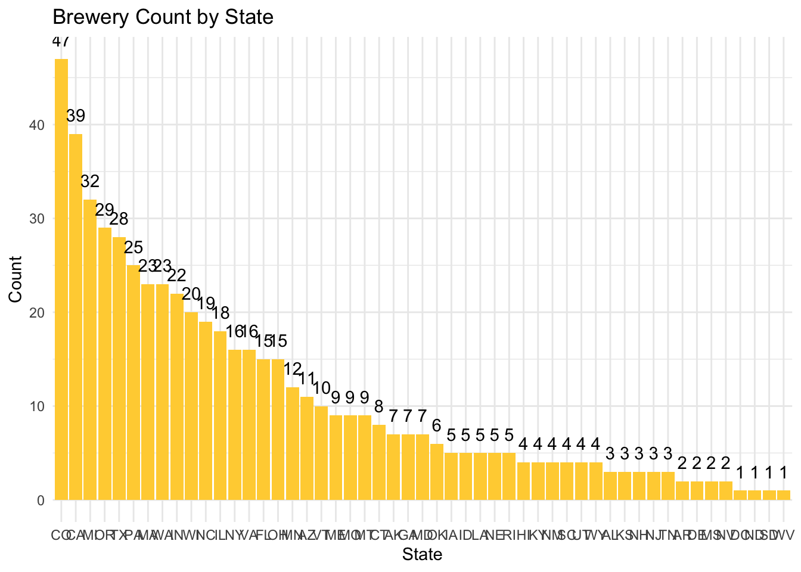
# Map of Breweries by State
map_brews <- left_join(mapdata, brew_beers_summary)## Joining, by = "State"head(map_brews)## long lat group order region subregion State
## 1 -87.46201 30.38968 1 1 alabama <NA> AL
## 2 -87.48493 30.37249 1 2 alabama <NA> AL
## 3 -87.52503 30.37249 1 3 alabama <NA> AL
## 4 -87.53076 30.33239 1 4 alabama <NA> AL
## 5 -87.57087 30.32665 1 5 alabama <NA> AL
## 6 -87.58806 30.32665 1 6 alabama <NA> AL
## count
## 1 3
## 2 3
## 3 3
## 4 3
## 5 3
## 6 3map_brews[5000, ] # testing random line## long lat group order region subregion
## 5000 -70.30766 46.03716 18 5017 maine <NA>
## State count
## 5000 ME 9map_brews %>%
ggplot(aes(long, lat, group = subregion)) +
geom_map(
aes(map_id = region),
map = mapdata,
color = "gray80", fill = "gray 30", size = 0.3
) +
coord_map("ortho", orientation = c(39, -98, 0)) +
geom_polygon(aes(group = group, fill = count), color = "black") +
ggtitle("State Heat Map - Brewery Count") +
scale_fill_scico(palette = "lajolla") +
theme_minimal()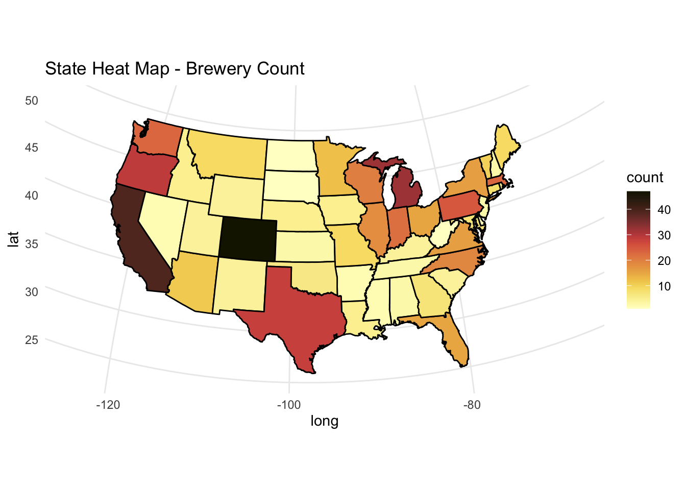
Q2: Merge beer data with the breweries data. Print the first 6 observations
and the last six observations to check the merged file. (RMD only, this does
not need to be included in the presentation or the deck.)
# See Transform section for merge.
# First six rows
view(head(brew_beers, 6))
# Last six rows
view(tail(brew_beers, 6))Q3: Address the missing values in each column.
# Missing values will be removed for ABV, IBU, and Styles as needed.
colSums(is.na(brew_beers_new) | brew_beers_new == "")## beer_name Beer_ID ABV IBU
## 0 0 62 1004
## Brewery_id Style Ounces brewery_name
## 0 5 0 0
## City State style_strict abv_cat
## 0 0 0 64
## abv_cat_num ibu_cat ibu_cat_num
## 64 1007 1007Q4: Compute the median alcohol content and international bitterness unit for
each state. Plot a bar chart to compare.
# Median ABV
median_state_abv <-
brew_beers_new %>%
filter(!is.na(ABV)) %>%
group_by(State) %>%
summarize(median_abv = median(ABV)) %>%
as.data.frame()
median_state_abv## State median_abv
## 1 AK 0.0560
## 2 AL 0.0600
## 3 AR 0.0520
## 4 AZ 0.0550
## 5 CA 0.0580
## 6 CO 0.0605
## 7 CT 0.0600
## 8 DC 0.0625
## 9 DE 0.0550
## 10 FL 0.0570
## 11 GA 0.0550
## 12 HI 0.0540
## 13 IA 0.0555
## 14 ID 0.0565
## 15 IL 0.0580
## 16 IN 0.0580
## 17 KS 0.0500
## 18 KY 0.0625
## 19 LA 0.0520
## 20 MA 0.0540
## 21 MD 0.0580
## 22 ME 0.0510
## 23 MI 0.0620
## 24 MN 0.0560
## 25 MO 0.0520
## 26 MS 0.0580
## 27 MT 0.0550
## 28 NC 0.0570
## 29 ND 0.0500
## 30 NE 0.0560
## 31 NH 0.0550
## 32 NJ 0.0460
## 33 NM 0.0620
## 34 NV 0.0600
## 35 NY 0.0550
## 36 OH 0.0580
## 37 OK 0.0600
## 38 OR 0.0560
## 39 PA 0.0570
## 40 RI 0.0550
## 41 SC 0.0550
## 42 SD 0.0600
## 43 TN 0.0570
## 44 TX 0.0550
## 45 UT 0.0400
## 46 VA 0.0565
## 47 VT 0.0550
## 48 WA 0.0555
## 49 WI 0.0520
## 50 WV 0.0620
## 51 WY 0.0500median_state_abv %>%
ggplot(aes(
x = reorder(State, -median_abv),
y = median_abv * 100)
) +
geom_bar(stat = "identity", fill = "#2a5769") +
geom_text(aes(label = median_abv * 100),
stat = "identity", vjust = -1, size = 3) +
xlab("State") +
ylab("Median ABV") +
ggtitle("Median ABV by State") +
theme_minimal() +
theme(legend.position = "none")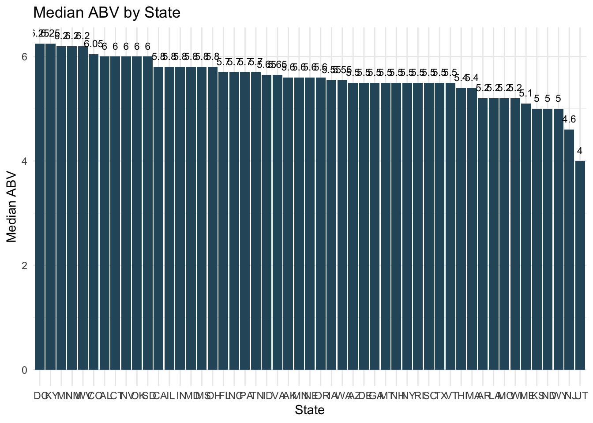
# Median IBU
median_state_ibu <-
brew_beers_new %>%
filter(!is.na(IBU)) %>%
group_by(State) %>%
summarize(median_ibu = median(IBU)) %>%
as.data.frame()
median_state_ibu## State median_ibu
## 1 AK 46.0
## 2 AL 43.0
## 3 AR 39.0
## 4 AZ 20.5
## 5 CA 42.0
## 6 CO 40.0
## 7 CT 29.0
## 8 DC 47.5
## 9 DE 52.0
## 10 FL 55.0
## 11 GA 55.0
## 12 HI 22.5
## 13 IA 26.0
## 14 ID 39.0
## 15 IL 30.0
## 16 IN 33.0
## 17 KS 20.0
## 18 KY 31.5
## 19 LA 31.5
## 20 MA 35.0
## 21 MD 29.0
## 22 ME 61.0
## 23 MI 35.0
## 24 MN 44.5
## 25 MO 24.0
## 26 MS 45.0
## 27 MT 40.0
## 28 NC 33.5
## 29 ND 32.0
## 30 NE 35.0
## 31 NH 48.5
## 32 NJ 34.5
## 33 NM 51.0
## 34 NV 41.0
## 35 NY 47.0
## 36 OH 40.0
## 37 OK 35.0
## 38 OR 40.0
## 39 PA 30.0
## 40 RI 24.0
## 41 SC 30.0
## 42 TN 37.0
## 43 TX 33.0
## 44 UT 34.0
## 45 VA 42.0
## 46 VT 30.0
## 47 WA 38.0
## 48 WI 19.0
## 49 WV 57.5
## 50 WY 21.0median_state_ibu %>%
ggplot(aes(
x = reorder(State, -median_ibu),
y = median_ibu
)) +
geom_bar(stat = "identity", fill = "#93b3be") +
geom_text(aes(label = median_ibu),
stat = "identity", vjust = -1, size = 3) +
xlab("State") +
ylab("Median IBU") +
ggtitle("Median IBU by State") +
theme_minimal() +
theme(legend.position = "none")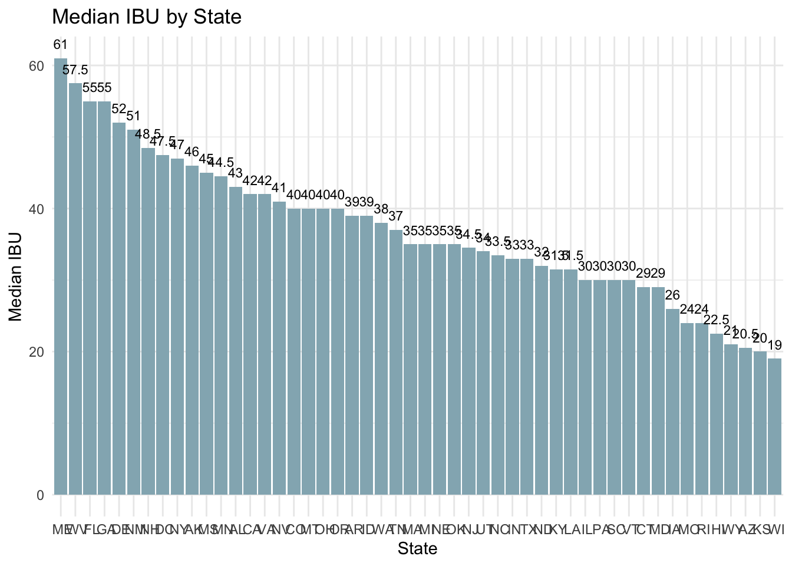
Q5: Which state has the maximum alcoholic (ABV) beer? Which state has the
most bitter (IBU) beer?
# Max ABV State
brew_beers_new %>%
group_by(State) %>%
filter(!is.na(ABV)) %>%
summarize(max_abv = max(ABV)) %>%
slice_max(max_abv, n = 1)## # A tibble: 1 × 2
## State max_abv
## <chr> <dbl>
## 1 " CO" 0.128## Colorado makes the beer with the greatest ABV at 12.8%.
# Max IBU State
brew_beers_new %>%
group_by(State) %>%
filter(!is.na(IBU)) %>%
summarize(max_ibu = max(IBU)) %>%
slice_max(max_ibu, n = 1)## # A tibble: 1 × 2
## State max_ibu
## <chr> <int>
## 1 " OR" 138## Oregon makes the beer with the greatest IBU at 138.Q6: Comment on the summary statistics and distribution of the ABV variable.
# Summary statistics
brew_beers_new %>%
select(ABV) %>%
filter(!is.na(ABV)) %>%
summary(ABV)## ABV
## Min. :0.0270
## 1st Qu.:0.0500
## Median :0.0560
## Mean :0.0598
## 3rd Qu.:0.0670
## Max. :0.1280## While ABV has a large range, 50% of beers fall between 5.0% and 6.7%
## Its distribution is close to normal but is slightly right skewed.
## ABV Boxplot
brew_beers_new %>%
filter(!is.na(ABV)) %>%
ggplot(aes(y = ABV)) +
geom_boxplot(fill = "#d8b135") +
ylab("ABV") +
ggtitle("ABV Boxplot") +
theme_minimal()
## ABV Histgram
brew_beers_new %>%
filter(!is.na(ABV)) %>%
ggplot(aes(x = ABV)) +
geom_histogram(fill = "#d8b135") +
xlab("ABV") +
ylab("Count") +
ggtitle("ABV Histogram") +
theme_minimal()## `stat_bin()` using `bins = 30`. Pick better value with
## `binwidth`.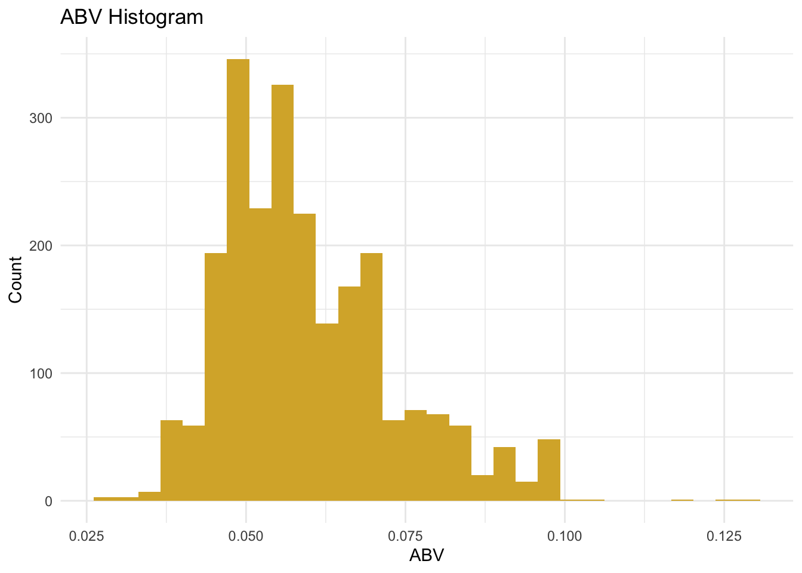
Q7: Is there an apparent relationship between the bitterness of the beer and
its alcoholic content? Draw a scatter plot. Make your best judgment of a
relationship and EXPLAIN your answer.
# ABV vs. IBU scatterplot with linear model
brew_beers_new %>%
filter(!is.na(ABV) & !is.na(IBU)) %>%
ggplot(aes(x = ABV, y = IBU)) +
geom_point() +
geom_smooth(method = "lm", color = "#ff8270") +
xlab("ABV") +
ylab("IBU") +
ggtitle("ABV vs. IBU") +
theme_minimal()## `geom_smooth()` using formula 'y ~ x'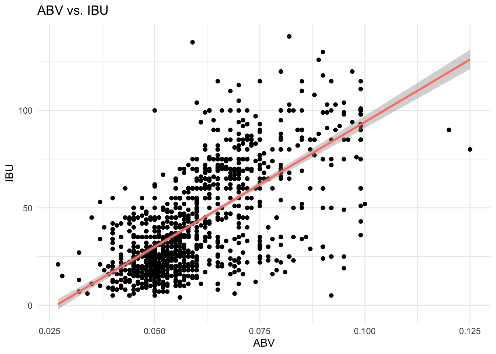
## It appears there is a fairly tight positive relationship between the 1st
## and 3rd Quartile of ABV. The relationship weakens greatly towards the upper
## and lower limits of ABVQ8: Budweiser would also like to investigate the difference with respect to
IBU and ABV between IPAs (India Pale Ales) and other types of Ale
(any beer with “Ale” in its name other than IPA). You decide to use KNN
classification to investigate this relationship. Provide statistical
evidence one way or the other. You can of course assume your audience is
comfortable with percentages… KNN is very easy to understand conceptually.
In addition, while you have decided to use KNN to investigate this
relationship (KNN is required) you may also feel free to supplement your
response to this question with any other methods or techniques you have
learned. Creativity and alternative solutions are always encouraged.
## IPA and Ale dataset
ipa_ale_comp <-
brew_beers_new %>%
filter(!is.na(ABV) & !is.na(IBU)) %>%
filter(style_strict == "Ale" | style_strict == "IPA")
## Scatter plot of IBU vs. ABV
ipa_ale_comp %>%
ggplot(aes(x = IBU, y = ABV)) +
geom_point(aes(color = style_strict)) +
geom_smooth(method = "lm") +
xlab("IBU") +
ylab("ABV") +
ggtitle("Ale and IPA - IBU vs ABV") +
theme_minimal()## `geom_smooth()` using formula 'y ~ x'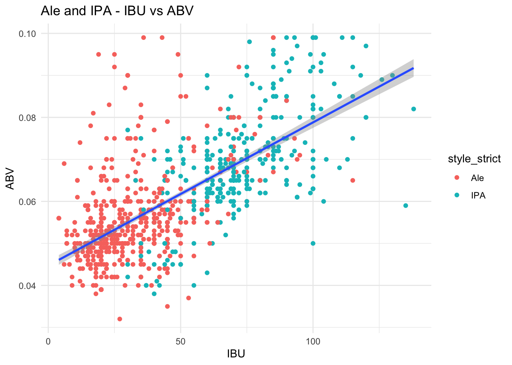
## Variables
set.seed(1)
iterations <- 100
numks <- 40
split_perc <- .7
ipa_ale_len <- dim(ipa_ale_comp)[1]
master_acc <- matrix(nrow = iterations, ncol = numks)
## For loop to find best K value
for (j in 1:iterations) {
train_indices <- sample(seq(1, ipa_ale_len, 1), split_perc * ipa_ale_len)
train <- ipa_ale_comp[train_indices, ]
test <- ipa_ale_comp[-train_indices, ]
for (i in 1:numks) {
classifications <- knn(train[, 3:4], test[, 3:4],
train$style_strict, prob = TRUE, k = i)
table(classifications, test$style_strict)
cm <- confusionMatrix(table(classifications, test$style_strict))
master_acc[j, i] <- cm$overall[1]
}
}
mean_acc <- as.data.frame(colMeans(master_acc))
colnames(mean_acc) <- c("master_acc")
bestknn <- which.max(mean_acc$master_acc)
bestknn## [1] 7## Best K value is 7
classifications <- knn(train[, 3:4], test[, 3:4], train$style_strict,
prob = TRUE, k = bestknn)
table(classifications, test$style_strict)##
## classifications Ale IPA
## Ale 169 21
## IPA 19 94cm <- confusionMatrix(table(classifications, test$style_strict))
cm## Confusion Matrix and Statistics
##
##
## classifications Ale IPA
## Ale 169 21
## IPA 19 94
##
## Accuracy : 0.868
## 95% CI : (0.8246, 0.904)
## No Information Rate : 0.6205
## P-Value [Acc > NIR] : <2e-16
##
## Kappa : 0.7188
##
## Mcnemar's Test P-Value : 0.8744
##
## Sensitivity : 0.8989
## Specificity : 0.8174
## Pos Pred Value : 0.8895
## Neg Pred Value : 0.8319
## Prevalence : 0.6205
## Detection Rate : 0.5578
## Detection Prevalence : 0.6271
## Balanced Accuracy : 0.8582
##
## 'Positive' Class : Ale
## ## With K value 7 and 'Positive' Class: Ale
## Accuracy - 86.47%
## Sensitivity - 89.89%
## Specificity - 80.87%Q9: Knock their socks off! Find one other useful inference from the data
that you feel Budweiser may be able to find value in. You must convince
them why it is important and back up your conviction with appropriate
statistical evidence.
# Percent IPA vs Ale at given IBU and ABV thresholds.
ipa_ale_comp %>%
filter(IBU < 50 & ABV < 0.06) %>%
group_by(style_strict) %>%
summarise(count = n()) %>%
mutate(percent_of_total = count / sum(count))## # A tibble: 2 × 3
## style_strict count percent_of_total
## <chr> <int> <dbl>
## 1 Ale 416 0.931
## 2 IPA 31 0.0694ipa_ale_comp %>%
filter(IBU >= 50 & ABV >= 0.06) %>%
group_by(style_strict) %>%
summarise(count = n()) %>%
mutate(percent_of_total = count / sum(count))## # A tibble: 2 × 3
## style_strict count percent_of_total
## <chr> <int> <dbl>
## 1 Ale 79 0.201
## 2 IPA 314 0.799# State data frame
state_df <-
ipa_ale_comp %>%
group_by(State) %>%
summarise(count = n()) %>%
mutate(sum = sum(count), total_percent = (count / sum) * 100) %>%
select(State, total_percent)
state_df %>%
ggplot(aes(x = reorder(State, -total_percent), y = total_percent)) +
geom_bar(stat = "identity", fill = "#ff8270") +
geom_text(aes(label = round(total_percent, 2)), stat = "identity", vjust = -1) +
xlab("State") +
ylab("Percent of Total") +
ggtitle("State Percentage Share of Ales and IPA Production") +
theme_minimal()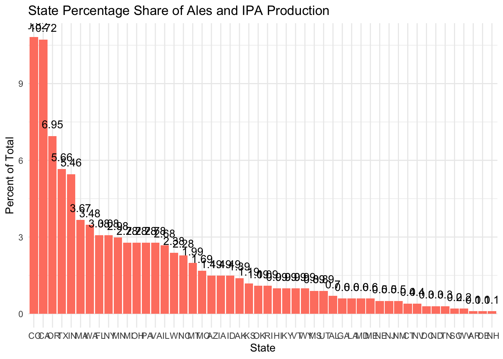
# Upper threshold of Ales
ale_upper <- ipa_ale_comp %>%
filter(IBU >= 50 & ABV >= 0.06) %>%
filter(style_strict == "Ale")
ale_upper_percent <-
ale_upper %>%
group_by(State) %>%
summarise(count = n()) %>%
mutate(sum = sum(count), upper_ale_percent = (count / sum) * 100) %>%
select(State, upper_ale_percent)
# Lower threshold of IPAs
ipa_lower <- ipa_ale_comp %>%
filter(IBU < 50 & ABV < 0.06) %>%
filter(style_strict == "IPA")
ipa_upper_percent <-
ipa_lower %>%
group_by(State) %>%
summarise(count = n()) %>%
mutate(sum = sum(count), lower_ipa_percent = (count / sum) * 100) %>%
select(State, lower_ipa_percent)
state_df_perc <- left_join(state_df, ale_upper_percent)## Joining, by = "State"state_df_perc <- left_join(state_df_perc, ipa_upper_percent)## Joining, by = "State"# Upper Ale threshold state breakdown
state_df_perc %>%
mutate(ale_dif = upper_ale_percent - total_percent) %>%
ggplot(aes(x = reorder(State, -ale_dif), y = ale_dif)) +
geom_bar(stat = "identity", fill = "#f8766d") +
xlab("State") +
ylab("Difference from Percent Total") +
ggtitle("Where to Sell High ABV/IBU Ales") +
theme_minimal()## Warning: Removed 24 rows containing missing values
## (position_stack).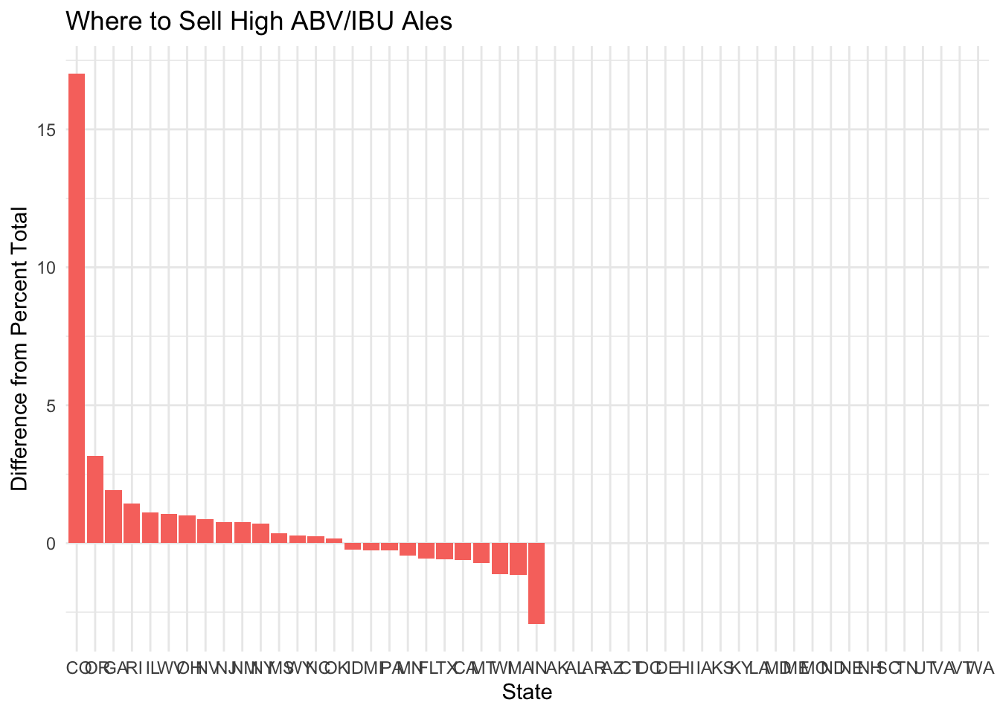
# Lower IPA threshold state breakdown
state_df_perc %>%
mutate(ipa_dif = lower_ipa_percent - total_percent) %>%
ggplot(aes(x = reorder(State, -ipa_dif), y = ipa_dif)) +
geom_bar(stat = "identity", fill = "#00bfc4") +
xlab("State") +
ylab("Difference from Percent Total") +
ggtitle("Where to Sell Low ABV/IBU IPAs") +
theme_minimal()## Warning: Removed 35 rows containing missing values
## (position_stack).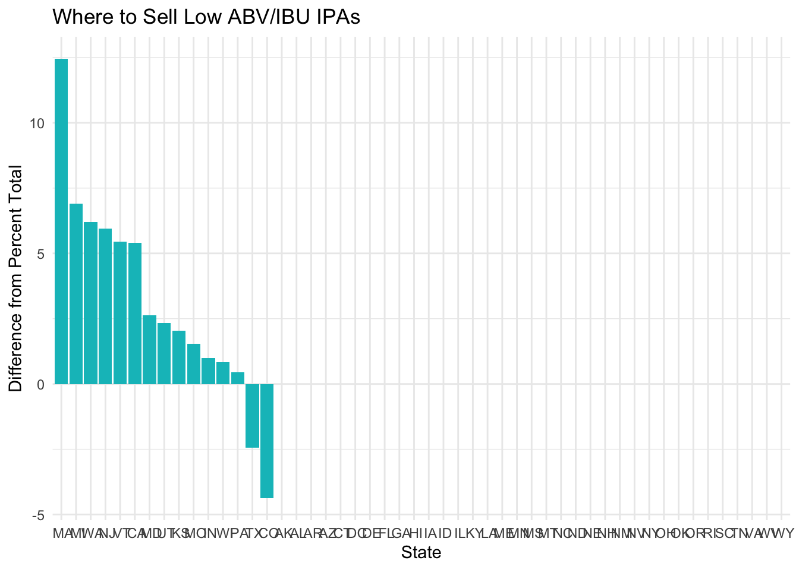
EDA
# ABV and IBU relationship when restricting ABV between Q1-Q3
brew_beers_new %>%
filter(!is.na(ABV) & !is.na(IBU)) %>%
filter(between(ABV, .05, .067)) %>%
ggplot(aes(x = ABV, y = IBU)) +
geom_point() +
geom_smooth(method = "lm", color = "#ff8270") +
xlab("ABV") +
ylab("IBU") +
ggtitle("IBU vs. ABV Limited to ABV: Q1-Q3") +
theme_minimal()## `geom_smooth()` using formula 'y ~ x'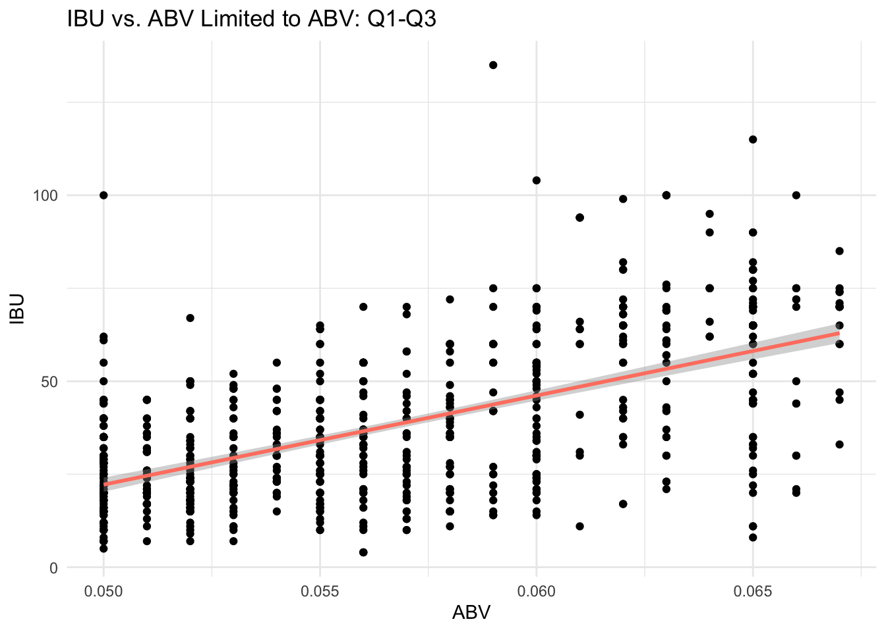
# IBU categories with ABV categories facet wrap.
brew_beers_new %>%
filter(!is.na(ibu_cat) & !is.na(abv_cat)) %>%
ggplot(aes(x = ibu_cat_num, fill = style_strict)) +
geom_bar() +
facet_wrap(~abv_cat_num, nrow = 1) +
xlab("IBU Category") +
ggtitle("IBU Category by ABV Facet Wrap and Style") +
theme_minimal()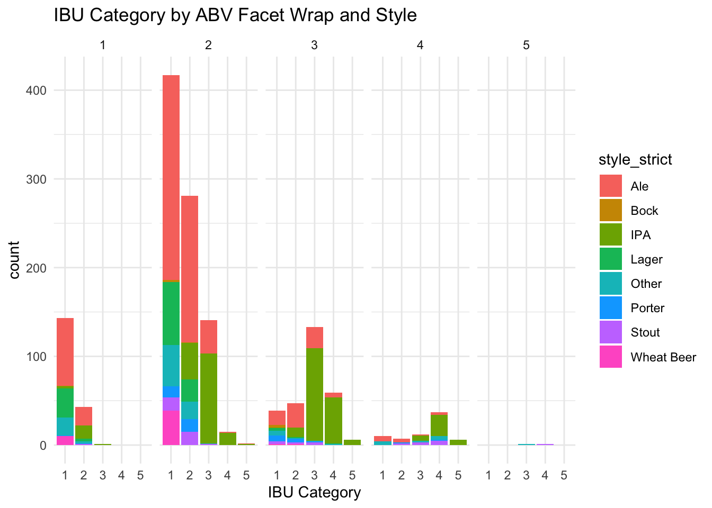
## Beer count has a positive relation with ABV and IBU until category 2 of ABV
## It appears that at higher ABVs there is a negative coorelation between ABV
## and IBU
# ABV vs. IBU by Style
brew_beers_new %>%
filter(!is.na(ibu_cat) & !is.na(abv_cat)) %>%
ggplot(aes(x = ABV, y = IBU)) +
geom_point(aes(color = style_strict)) +
geom_smooth(method = "lm") +
facet_wrap(~style_strict) +
ggtitle("ABV vs IBU - Style Facet Wrap") +
theme_minimal()## `geom_smooth()` using formula 'y ~ x'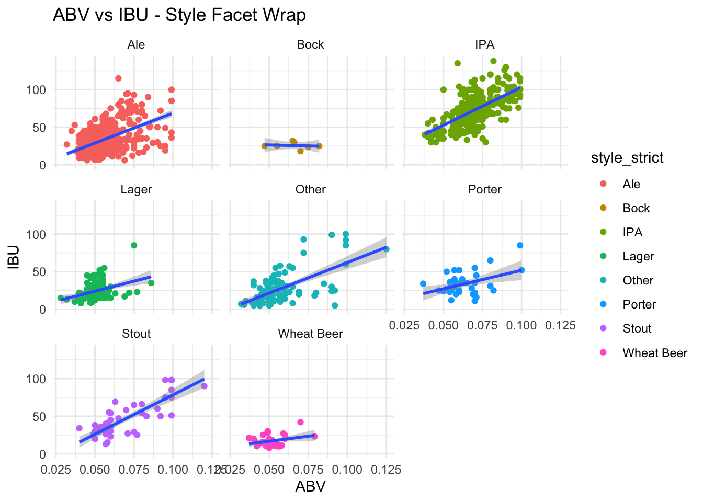
# Top style by state
## Creating dataframe grouped by State and style_strict
top_beer <- brew_beers_new %>%
filter(!is.na(ibu_cat) & !is.na(abv_cat)) %>%
group_by(State, style_strict) %>%
summarize(count = n())## `summarise()` has grouped output by 'State'. You can override using the `.groups` argument.## Beer styles by state bar chart
top_beer %>%
ggplot(aes(x = reorder(State, -count), y = count, fill = style_strict)) +
geom_bar(stat = "identity") +
xlab("State") +
ylab("Count") +
ggtitle("Beer Styles by State") +
theme_minimal()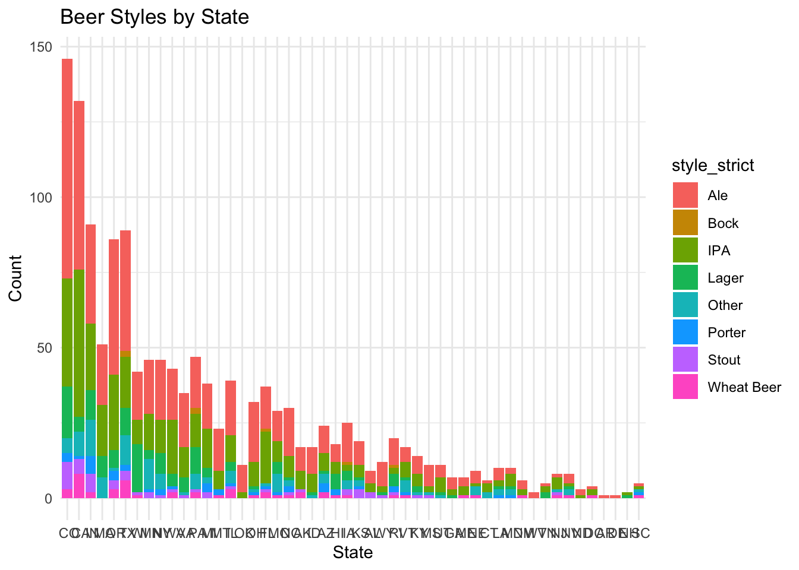
## Organizing data for viewing top style by state
sorted_group <- top_beer[order(top_beer$State, -top_beer$count), ]
top_style_by_state <- sorted_group[!duplicated(sorted_group$State), ]
## Top style by state chart
top_style_by_state %>%
ggplot(aes(x = reorder(State, -count), y = count, fill = style_strict)) +
geom_bar(stat = "identity") +
xlab("State") +
ylab("Count") +
ggtitle("Top Style by State") +
theme_minimal()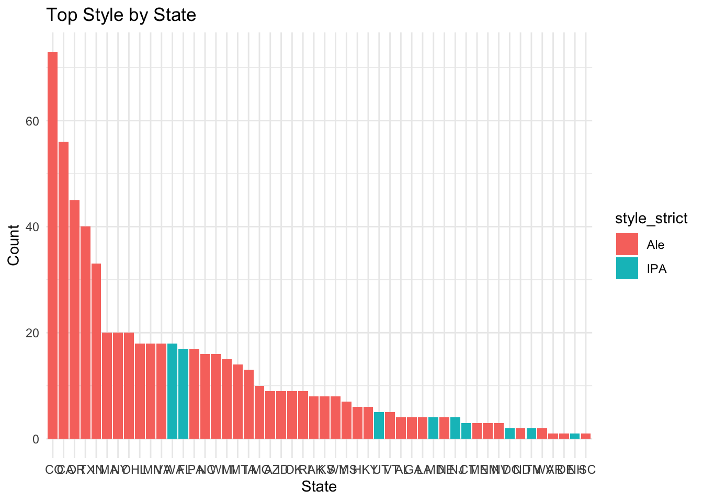
## Number of beers per style
brew_beers_new %>%
group_by(style_strict) %>%
summarize(count = n())## # A tibble: 8 × 2
## style_strict count
## <chr> <int>
## 1 Ale 1090
## 2 Bock 19
## 3 IPA 558
## 4 Lager 235
## 5 Other 242
## 6 Porter 74
## 7 Stout 100
## 8 Wheat Beer 91# Utah IBU vs. ABV scatter plot
brew_beers_new %>%
filter(!is.na(ABV) & !is.na(IBU) & State == " UT") %>%
ggplot(aes(x = IBU, y = ABV)) +
geom_point() +
geom_smooth() +
xlab("IBU") +
ylab("ABV") +
ggtitle("Utah - IBU vs. ABV") +
theme_minimal()## `geom_smooth()` using method = 'loess' and formula 'y ~ x'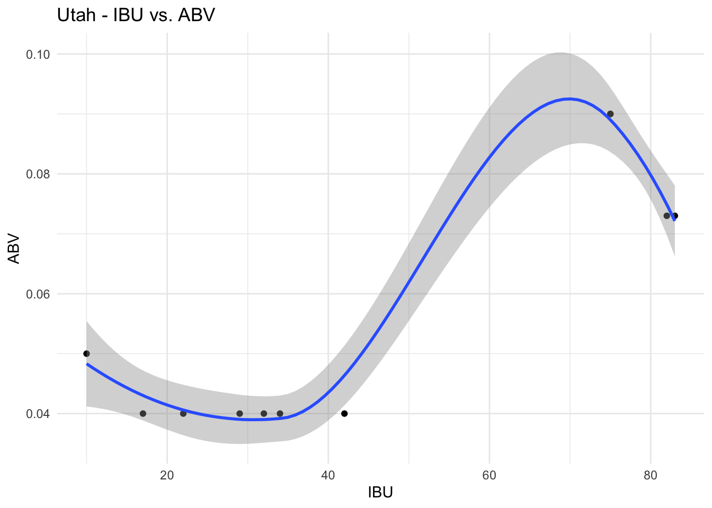
# ABV Histogram facet wrap on style
brew_beers_new %>%
filter(!is.na(ABV) & !is.na(IBU)) %>%
ggplot(aes(x = ABV, color = style_strict)) +
geom_histogram() +
facet_wrap(~style_strict) +
xlab("ABV") +
ylab("Beer Count") +
ggtitle("ABV Histogram") +
theme_minimal()## `stat_bin()` using `bins = 30`. Pick better value with
## `binwidth`.
# Facet wrap abv_cat_num with normalized count by style
brew_beers_new %>%
filter(!is.na(ABV) & !is.na(IBU)) %>%
group_by(style_strict, abv_cat_num) %>%
summarise(count = n(), mean_abv = mean(ABV)) %>%
mutate(sum = sum(count), percent = count / sum) %>%
ggplot(aes(x = abv_cat_num, y = percent, fill = style_strict)) +
geom_histogram(stat = "identity", binwidth = 100) +
geom_text(aes(label = round(percent, 2)), stat = "identity", vjust = -1) +
facet_wrap(~style_strict) +
xlab("ABV Category") +
ylab("Normalized Beer Count") +
ggtitle("ABV Category by Style and Normalized Beer Count") +
theme_minimal()## `summarise()` has grouped output by 'style_strict'. You can override using the `.groups` argument.## Warning: Ignoring unknown parameters: binwidth, bins, pad
# Stouts/IPA ABV Histogram
brew_beers_new %>%
filter(!is.na(ABV) & !is.na(IBU)) %>%
filter(style_strict == "IPA" | style_strict == "Stout") %>%
ggplot(aes(x = ABV, color = style_strict)) +
geom_histogram() +
xlab("ABV") +
ylab("Beer Count") +
ggtitle("Stouts vs. IPA Histogram") +
theme_minimal()## `stat_bin()` using `bins = 30`. Pick better value with
## `binwidth`.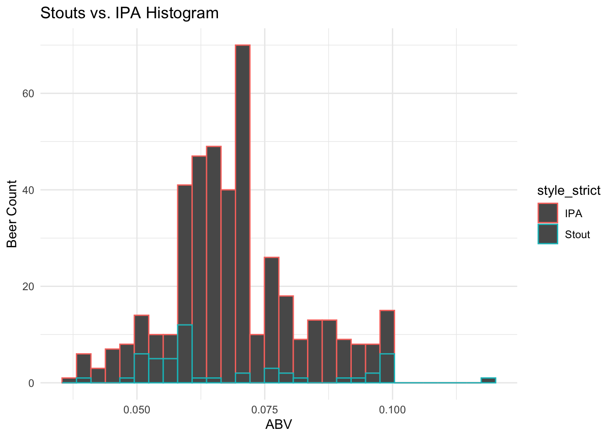
# Ale/Stout/IPA ABV Histogram
brew_beers_new %>%
filter(!is.na(ABV) & !is.na(IBU)) %>%
filter(style_strict == "IPA" |
style_strict == "Stout" |
style_strict == "Ale"
) %>%
ggplot(aes(x = ABV, color = style_strict)) +
geom_histogram() +
xlab("ABV") +
ylab("Beer Count") +
ggtitle("ABV Histogram by Ale/Stout/IPA") +
theme_minimal()## `stat_bin()` using `bins = 30`. Pick better value with
## `binwidth`.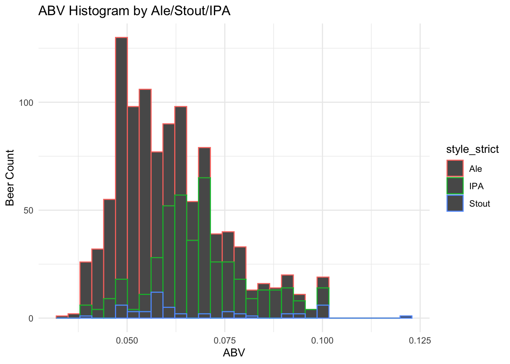
# IPA/Stout Normalized counts of mean ABV
brew_beers_new %>%
filter(!is.na(ABV) & !is.na(IBU)) %>%
filter(style_strict == "IPA" | style_strict == "Stout") %>%
group_by(style_strict, abv_cat_num) %>%
summarise(mean_abv = median(ABV), count = n()) %>%
mutate(sum = sum(count), percent = count / sum) %>%
ggplot(aes(x = mean_abv, y = percent, fill = style_strict)) +
geom_histogram(stat = "identity") +
xlab("Mean ABV") +
ylab("Normalized Count") +
ggtitle("Mean ABV of IPA/Sout by Normalized Count") +
theme_minimal()## `summarise()` has grouped output by 'style_strict'. You can override using the `.groups` argument.## Warning: Ignoring unknown parameters: binwidth, bins, pad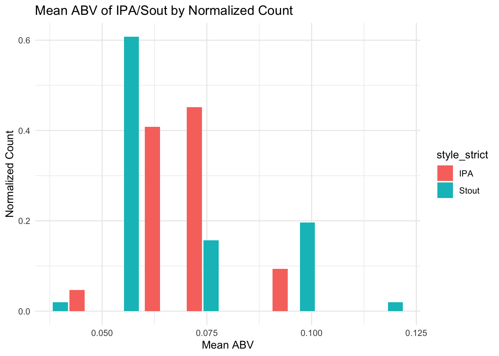
# Facet Grid of Style Count by ABV Cat vs IBU Cat
brew_beers_new %>%
filter(!is.na(ABV) & !is.na(IBU)) %>%
filter(!is.na(abv_cat_num) & !is.na(ibu_cat_num)) %>%
ggplot(aes(x = style_strict, fill = style_strict)) +
geom_bar() +
facet_grid(abv_cat_num~ibu_cat_num) +
xlab("IBU") +
ylab("ABV") +
ggtitle("Facet Grid of Style Count by ABV Cat vs IBU Cat") +
theme_minimal()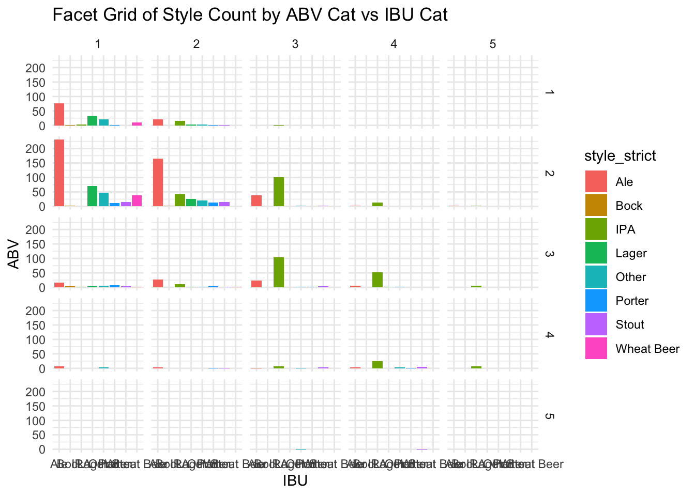